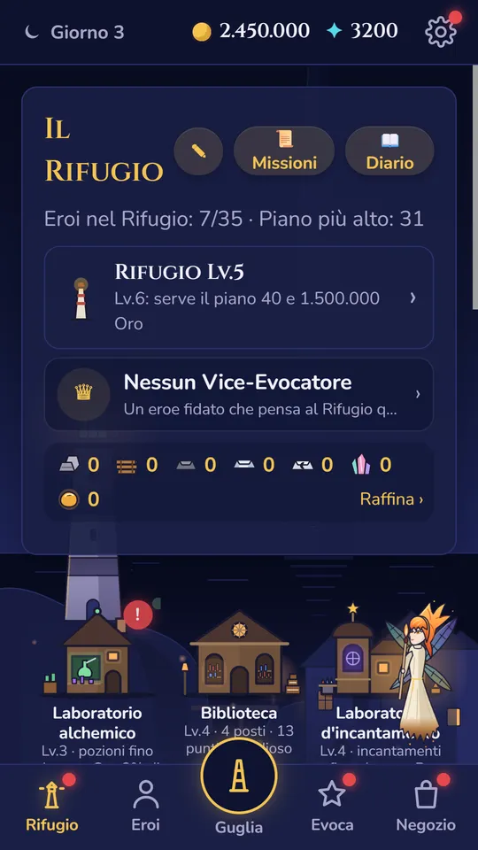
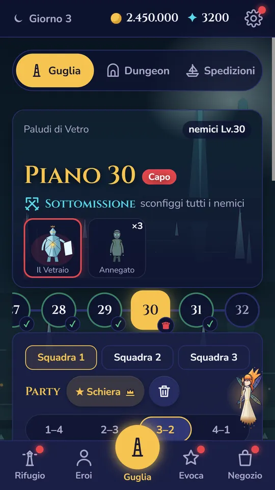
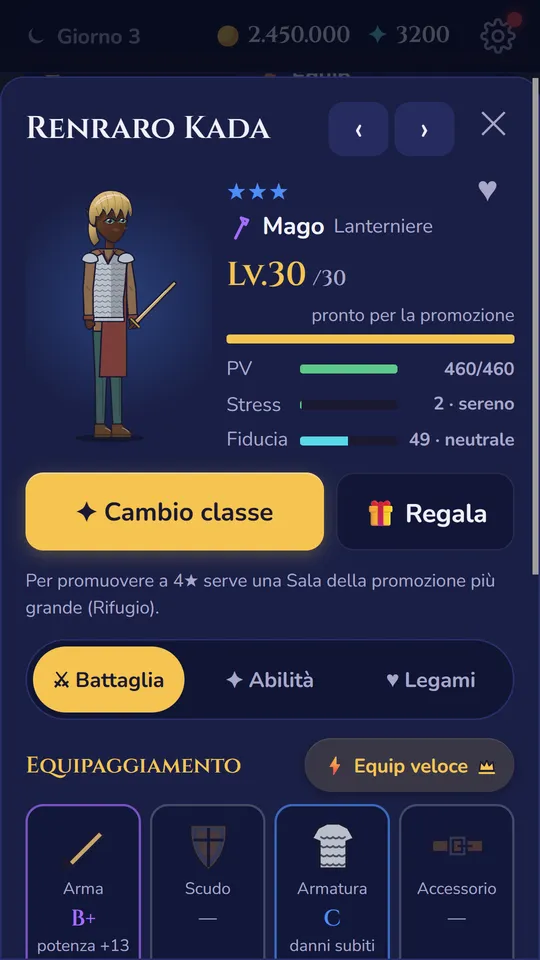
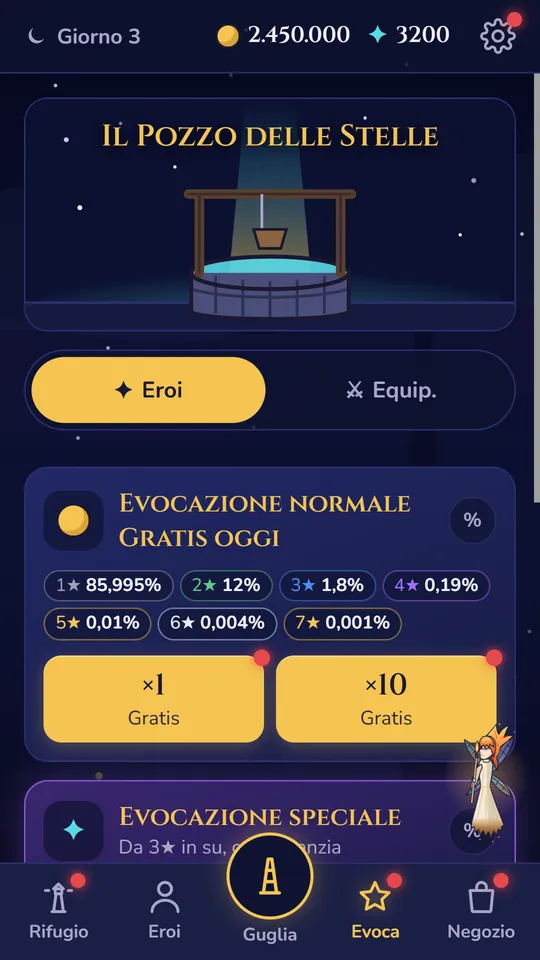
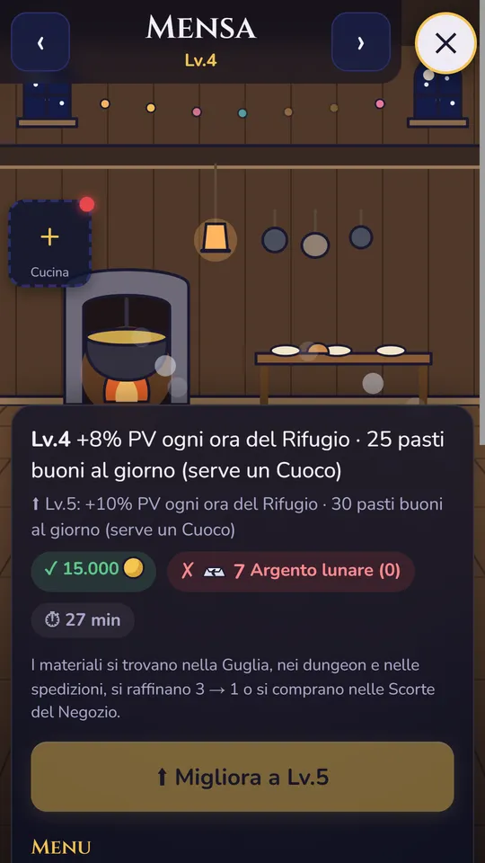
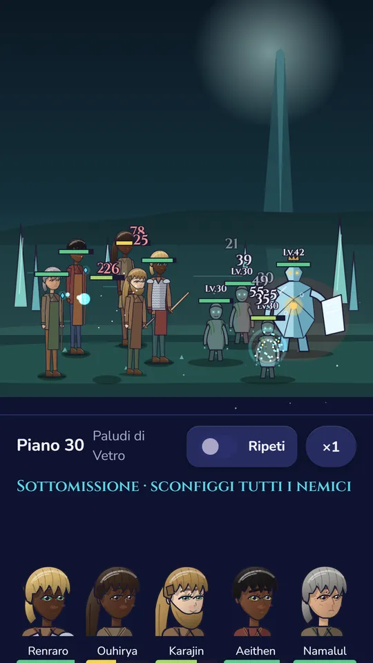

Battaglie automatiche, scelte che pesano
Scegli il party e la formazione, poi guarda. Paura, ferite, veleno, risvegli all'ultimo respiro. E chi cade non torna: la morte è per sempre.
 RPICKHEROES
RPICKHEROESOgni eroe nasce da una stella. Alcuni ne diventano una.
Evoca eroi dalle stelle e scala la Guglia di 100 piani. Chi cade non torna.
La storia
Dal mare è salita la Guglia, una torre di cento piani, e ogni piano custodisce una stella rubata.
Sei l'Evocatore. Dal Pozzo delle Stelle chiami eroi da mondi lontani: un fornaio, una cartografa, un cavaliere caduto in disgrazia. Nessuno è uguale a un altro: ognuno ha un nome, un mondo, un carattere, paure, talenti nascosti e gusti suoi.
Scegli il party e la formazione, poi guarda. Paura, ferite, veleno, risvegli all'ultimo respiro. E chi cade non torna: la morte è per sempre.
Un 1★ allenato bene può superare un 5★. Allenamento, promozioni con le pietre, classi avanzate, abilità che si fondono.
Un vecchio porto ai piedi della Guglia: Mensa, Forgia, Laboratorio alchemico. Gli eroi vivono anche quando sei via: si allenano, litigano, si affezionano.
Per chi ama le scelte che contano. Nessuna pubblicità. Salvataggio online e classifica tra Evocatori.
Dal gioco







«Oh! Oh oh oh. Questa luce è viola. Non succede spesso. Non ti abituare.»
Lumen, la piccola fatina della lanterna, ti guida. Ma Lumen sa più di quanto dice…
Test chiuso
Prima dell'uscita Google chiede un test chiuso: almeno 12 persone che giocano per 14 giorni di fila. Ti servono solo un telefono Android e un account Google. In cambio scali la Guglia prima di tutti, e quello che ci dici finisce nel gioco.
Con l'account Google che usi sul telefono Android. Il gruppo è aperto: chiunque può iscriversi.
Entra nel gruppoApri la pagina del test e tocca «Diventa un tester». Funziona appena Google approva il test.
In revisione da Google Apri il testScarica Starpick Heroes da Google Play, gioca quando vuoi e raccontaci cosa si rompe: per email o in DM su Instagram.
Starpick Heroes arriva presto su Android. Seguici su Instagram per la data d'uscita e le novità, o scrivici.